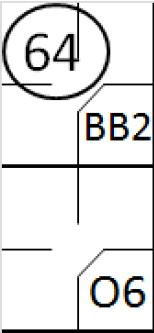
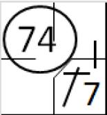
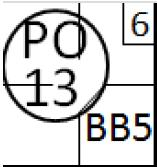
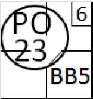

Retrait d’un coureur .
Retrait d’un coureur .

Un coureur est retiré quand ‘ Il n’atteint pas la base suivante, après avoir été forcé d’avancer par le batteur devenu coureur, avant qu’un défenseur en possession de la balle ne le touche ou ne touche la base suivante ’ [OBR 5.09(b)(6)] . Avec la première base occupé du à un ‘base on ball ’, le batteur frappe une balle au sol vers l’arrêt court, qui renvoie la balle au défenseur de la deuxième base qui attrape et touche la deuxième base, anticipant ainsi l’arrivée du coureur qui était forcé
 Un coureur est retiré lorsque ‘ Il est touché alors que la balle est en jeu, et qu’il n’est pas en contact avec sa base ’ [OBR 5.09(b)(4)] . Toutes les bases sont inoccupées, le batteur frappe un ‘hit’ vers le champ gauche et atteint la première base, il tente de rejoindre la deuxième base, mais il est retiré par le défenseur de la deuxième base qui vient de récupérer la balle lancée par le défenseur du champ gauche.
Un coureur peut aussi être touché par ce que l’on appelle un ‘ pick -off’ : attrapé (un coureur sur base) en dehors de sa base avec un lancer rapide du lanceur ou du receveur, souvent vers une base spécifiée. Pour noter cela, on utiliser le symbole ‘PO’ suivit du défenseur qui a fait l’assistance et du défenseur qui a fait le retrait. Dans le coin en haut à droite, on note le numéro d’ordre à la batte du batteur dans une petite case.
 Avec un coureur en première base et le sixième batteur à la frappe, le lanceur lance la balle au défenseur de la première base. Il touche le coureur alors qu’il tente de rejoindre sa base (jeu de ‘ pick off’).

Avec un coureur en première base et le sixième batteur à la frappe, le receveur relance la balle au défenseur de première base. Il touche le coureur alors qu’il tente de rejoindre sa base (jeu de ‘ pick off’).